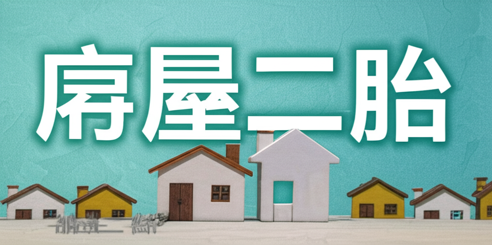

房屋二胎
引言
房屋二胎，顧名思義，就是在已經有房屋貸款（一胎）的情況下，再次以同一間房屋作為抵押品，向銀行或金融機構申請的第二次貸款。由於房產價值具有一定的保值性，房屋二胎成為許多人在資金周轉上的常見選擇。然而，申請房屋二胎涉及許多複雜的細節，需要仔細評估自身財務狀況與市場風險，才能做出明智的決定。 本文將深入探討房屋二胎的相關知識，協助讀者了解其運作方式、優缺點，以及申請時應注意的事項。
主體內容
第一點：房屋二胎的運作方式
房屋二胎的運作方式與一般房屋貸款類似，但風險也相對較高。當申請人需要資金時，將已經抵押過的房屋再次抵押給另一家銀行或金融機構。由於第一順位抵押權的優先償還權，二胎貸款的風險較高，因此利率通常也會較高。 貸款額度通常會根據房屋的殘餘價值（房屋總價值減去一胎貸款的未償還餘額）來評估。 金融機構會評估房屋的價值、申請人的信用狀況、還款能力等因素，來決定是否核准貸款以及貸款的額度和利率。
第二點：房屋二胎的優缺點
優點：
- 快速取得資金： 房屋二胎的審核速度通常比其他貸款方式快，能在短期內取得所需的資金，解決燃眉之急。
- 用途彈性： 貸款資金的用途沒有嚴格限制，可以用於投資理財、創業週轉、清償債務或應急支出等。
- 免保人： 通常不需要提供保人，減輕了人情上的負擔。
缺點：
- 利率較高： 由於風險較高，房屋二胎的利率通常比一般房屋貸款高出許多。
- 還款壓力大： 高利率加上較短的還款期限，可能導致每月的還款壓力增加。
- 房屋被拍賣的風險： 如果無法按時還款，房屋可能會被債權人拍賣，導致失去房產。
- 影響信用評分： 頻繁申請二胎貸款可能影響個人信用評分。
第三點：申請房屋二胎的注意事項
- 審慎評估自身財務狀況： 務必評估自身是否有足夠的還款能力，避免因無法按時還款而導致房產被拍賣。
- 比較不同金融機構的方案： 不同金融機構的利率、費用、還款方式等條件可能有所不同，應仔細比較，選擇最適合自己的方案。
- 注意合約條款： 仔細閱讀貸款合約，了解所有條款和條件，特別是利率、還款方式、違約金、提前還款規定等。
- 尋求專業建議： 如果對房屋二胎不熟悉，可以諮詢專業的理財顧問或貸款經紀人，獲得專業的建議。
- 避免過度借貸： 不要過度借貸，以免超出自己的還款能力。
結論
房屋二胎是一種快速取得資金的管道，但同時也伴隨著較高的風險。在申請房屋二胎之前，務必審慎評估自身財務狀況，了解其運作方式與風險，並仔細比較不同金融機構的方案，才能做出明智的決定，避免因財務壓力而失去房產。 謹慎規劃，理性借貸，才能讓房屋二胎成為解決財務問題的助力，而非負擔。